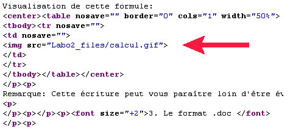
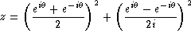

Représentation de l'information Laboratoire I
Andres Perez-Uribe et Guillaume Boutillier
Les documents.
Il existe différents formats possible pour les documents, nous allons ici vous présenter les plus courants:
3. Le format .doc
Le format .doc est le format propriétaire de Microsoft. Il est très répandu, car il est généralement installé en même temps que le système d'exploitation Windows (qui est le plus utilisé au monde!). Mais cela ne signifie pas que c'est un bon format.
Lorsqu'on réalise un document .doc (word), le texte et les figures sont directement mis ensemble. Ce qui n'est pas le cas dans des fichier .tex ou .html, dans ces fichier les images, graphiques, photos,.. sont séparés. C'est qu'à la création du document finale (document sous un format d'impression ou document pour page web) que l'assemblage est réalisé.
4. Le format .txt
Les fichiers au format texte contiennent uniquement le texte du document. Ils ne contiennent aucune information sur la signification du texte ou sur la mise en page du document.
Lorsqu'un fichier texte est ouvert dans un logiciels approprié et que des caractères n'apparaissent pas correctement, il s'agit d'un problème d'encodage. L'encodage des fichiers définit les caractères informatiques utilisés pour représenter les lettres de l'alphabet. De nos jours, pour les caractères non accentués, la règle est toujours la même, il s'agit des caractères ASCII. Les caractères accentués posent plus de difficultés puisque la norme utilisée dépend du système d'exploitation utilisé lors de la création du fichier.
1. Le format .html
Le langage HTML, c'est l'ensemble des instructions qu'un serveur (un ordinateur) adresse à votre logiciel de lecture du World Wide Web, dans le but d'afficher des pages telles que celle-ci. Ces pages peuvent contenir aussi bien du simple texte, que des liens vers d'autres pages, ou des images, des séquences animées ou encore des fichiers sons. Afin de rendre tous les lecteurs compatibles entre eux, ce langage doit respecter certaines règles afin que votre browser "réagisse" à certains codes et les interpréter en tant que commande, et non en tant que texte.
Définition
HTML signifie Hyper-Text Markup Language, ce que l'on pourrait traduire par : "langage texte avec liens". ou "langage hyper-texte". La notion d'hyper-texte représente la possibilité, lorsque vous lisez une page html, de cliquer sur un mot afin d'afficher à l'écran une page se rapportant au mot sur lequel vous avez cliqué.Structure d'une page HTML
Pour voir un exemple de fichier HTML, appuyez sur le bouton de droite de votre souris est choisissez "Afficher la source". Une nouvelle fenêtre va s'ouvrir avec le code HMTL de la page que vous lisez en ce moment.
Pour interpréter correctement les pages reçues, les pages doivent être structurées. Basons-nous sur la structure d'un livre, pour analyser celle d'une page HTML. Un livre se compose d'une préface, d'une introduction, et d'un prologue. Viennent ensuite les chapitres et l'épilogue, éventuellement une postface. Une page HTML va se composer suivant une structure a peu près équivalente. Notons que toute instruction commence par un signe de début et finit par un signe de fin. En général, les instructions début et fin seront les mêmes, celle de fin ayant juste le signe / en plus. Pour que le browser sache que ce sont des instructions, elles seront placées entre les signes < > et . On les appelle balises ou tags (en anglais).
 Comme expliqué plus haut, dans un fichier HTML les images sont assemblés lors de la création du document finale. Cette exemple vous montre l'insertion d'une image dans un fichier HTML. C'est uniquement lorsque vous demandez de visualiser cette page web que l'assemblage entre le texte et l'image se réalise. 2. Le format .tex
Le logiciel LaTeX est un traitement de texte scientifique particulièrement adapté à l'écriture des symboles mathématiques. Il appartient au monde du logiciel libre : on peut donc en obtenir des versions gratuites. On pourrait présenter LaTeX comme le traitement de texte idéal pour les scientifiques. Il excelle dans le traitement des formules mathématiques et dispose en standard de tous les caractères mathématiques.
Les avantages du logiciel LaTeX:
- L'invariance : les fichiers produits par des versions antérieures sont toujours lisibles avec les nouvelles versions.
- La portabilité : Les fichiers produits ne dépendent pas du matériel utilisé. On obtient le même fichier que l'on utilise un Macintosh, un pc sous Windows ou sous Linux.
- La petite taille des fichiers : Un fichier tex étant en code ASCII, il est donc très petit, ce qui facilite les échanges.
- L'adaptation aux mathématiques : LaTeX dispose de tous les caractères mathématiques existants.
- La gratuité : En version de base, LaTeX est un logiciel gratuit et librement diffusable.
Exemple d'une formule mathématique écrit sous LaTeX:
${\displaystyle z=\left( \frac {e^{i\theta}+e^{-i\theta}}{2}\right)^2 +left(\frac{e^{i\theta}-e^{-i\theta}}{2i} \right)^2}$Visualisation de cette formule:
 Remarque: Cette écriture peut vous paraître loin d'être évidente, mais avec un peu d'habitude, elle devient très pratique!